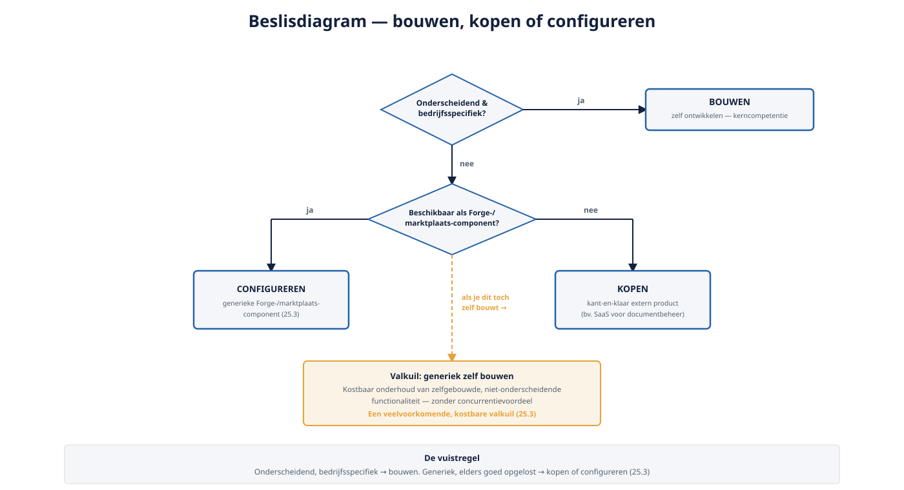

Deel 25 — Licentie- en kostenmodel: wat schaalt duur, bouwen-kopen-configureren
Slidedeck · Ductus-cursus OutSystems · Niveau 3 — Expert · deel 25 van 30 · 13 slides
Slide 1 — Title: OutSystems: Leidend
OutSystems: Leidend
Deel 25 — Licentie- en kostenmodel: wat schaalt duur, bouwen-kopen-configureren
Slide 2 — Statement: Een architecturaal correct advies
Een architecturaal correct advies
dat financieel overvalt, is geen goed advies.
Slide 3 — Section: Hoe licenties schalen
Hoe licenties schalen
Slide 4 — Table: Kostenstructuur: O11 versus ODC
Kostenstructuur: O11 versus ODC
| O11 | ODC | |
|---|---|---|
| Gekoppeld aan | Zelfbeheerde infrastructuur + licentie | Platformverbruik binnen abonnement |
| Extra capaciteit | Licentie + infra-investering | Verbruik binnen het platform |

Slide 5 — Section: Bouwen, kopen, configureren
Bouwen, kopen, configureren
Slide 6 — Bullets: De vuistregel
De vuistregel
- Onderscheidend, bedrijfsspecifiek → bouwen
- Generiek, elders goed opgelost → kopen of configureren
- Zelf bouwen van generieks: kostbare valkuil

Slide 7 — Opdracht: Opdracht 25.1 — Bouwen, kopen of configureren?
Opdracht 25.1 — Bouwen, kopen of configureren?
Drie functionaliteiten.
→ Werkboek 25.1
Slide 8 — Opdracht: Baan A / Baan B
Baan A / Baan B
A — Kosteninschatting nieuwe module (O11)
B — Kosteninschatting nieuwe module (ODC)
→ Werkboek, eigen baan
Slide 9 — Section: Total cost of ownership
Total cost of ownership
Slide 10 — Bullets: Meer dan bouwkosten
Meer dan bouwkosten
- Onderhoudskosten over de levensduur
- Kosten van opstapelende technische schuld
- Kosten van een eventuele toekomstige migratie
Slide 11 — Opdracht: Reflectieopdracht 25.2
Reflectieopdracht 25.2
Waarom is zelf bouwen van iets generieks een valkuil?
→ Werkboek 25.2
Slide 12 — Bullets: Kernpunten deel 25
Kernpunten deel 25
- Licentiekosten schalen met omvang en platformcapaciteit
- O11: infrastructuur + licentie; ODC: platformverbruik
- Bouw onderscheidend, koop/configureer generiek
- Total cost of ownership: bouw + onderhoud + schuld + migratierisico
Slide 13 — Section: Volgende deel: Vendor lock-in en exitstrategie
Volgende deel: Vendor lock-in en exitstrategie